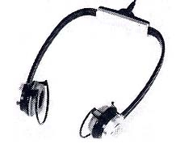
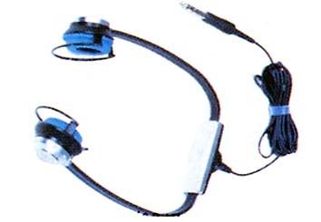
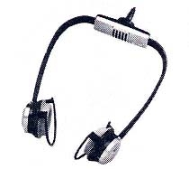

HP-100


■価格 3,500円■型式 ダイナミック型オープンエアタイプ■振動板 ■インピーダンス 20Ω■再生周波数帯域 50〜14,000Hz■許容入力 200mW■感度 103dB/mW■コード 3ｍ■重量 92g■発売 1978年6月■販売終了 1980〜81年頃■備考 聴診器型同じデザインでマイクロフォン内蔵のHP-55(4,500円)あり

(HP-55)
アイワのインデックスへ